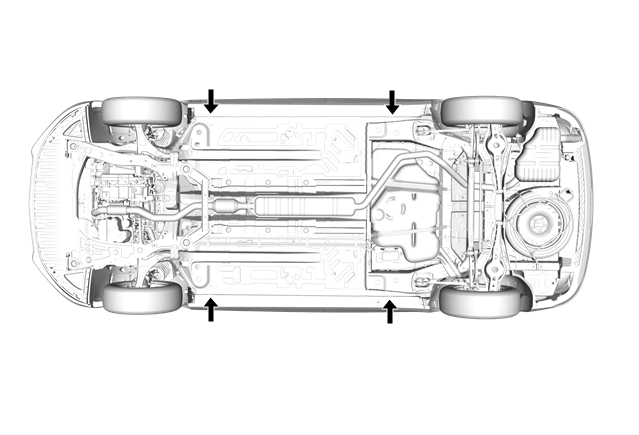

举升和顶起车辆
注意:
根据所用举升设备的情况，为避免与车身和结构发生不必要的接触，可能需要使用低剖面举升臂系统。用于举升设备的低位举升臂系统，其应用参见制造商的建议。

危险
危险：
为避免车辆损坏、严重人身伤害甚至死亡事故，在从车辆上拆下主要部件并用举升机支撑车辆时，应用千斤顶座支撑待拆卸部件相对侧的车辆部位，并将车辆束缚在举升机上。
危险
危险：
为避免车辆损坏、严重人身伤害甚至死亡事故，用千斤顶举升车辆时，务必使用千斤顶座支撑车辆。
告诫：
在开始任何车辆提升或举升程序前，执行如下步骤：
拆卸或固定车内所有物品，以免在执行提升或举升程序时，发生移动或任何其它运动。
提升装置或举升设备的额定重量必须达到或超过车辆及其车内物品的重量。
提升装置或举升设备必须满足提升设备或举升设备制造商规定的操作标准。
在清洁、坚实、干燥、水平的表面上执行车辆提升或举升程序。
仅在规定的提升点执行车辆提升或举升程序。不得让提升装置或举升设备接触任何其它车辆部件。
若不按照上述步骤，会导致提升设备或举升设备、车辆和/或车内物品损坏。
车辆举升—车架接触式举升机
前举升垫块
如图所示，用车架接触式举升机举升车辆时，将前举升垫块放到门槛外板焊接凸缘上。
后举升垫块
如图所示，用车架接触式举升机举升车辆时，将后举升垫块放到门槛外板焊接凸缘上。
车辆顶起
告诫：
当在前面位置顶起车辆时，确保千斤顶或千斤顶举升垫块没有接触到前蒙皮、前蒙皮阻风板或前翼子板。如果碰到了上述部位，可能会导致车辆损坏。当在选定的前端位置顶起时，顶起点可能需要更多的间隙。
注意:
当用维修千斤顶顶起车辆时，应垫好与车辆顶起位置相对一侧的车轮。用千斤顶座提供额外支撑。
车辆前部
当使用维修千斤顶顶起车辆前部时，如图所示，将维修千斤顶垫块放到与前举升垫块相同位置。
车辆后部
当使用维修千斤顶顶起车辆后部时，如图所示，将维修千斤顶垫块放到与后举升垫块相同位置。